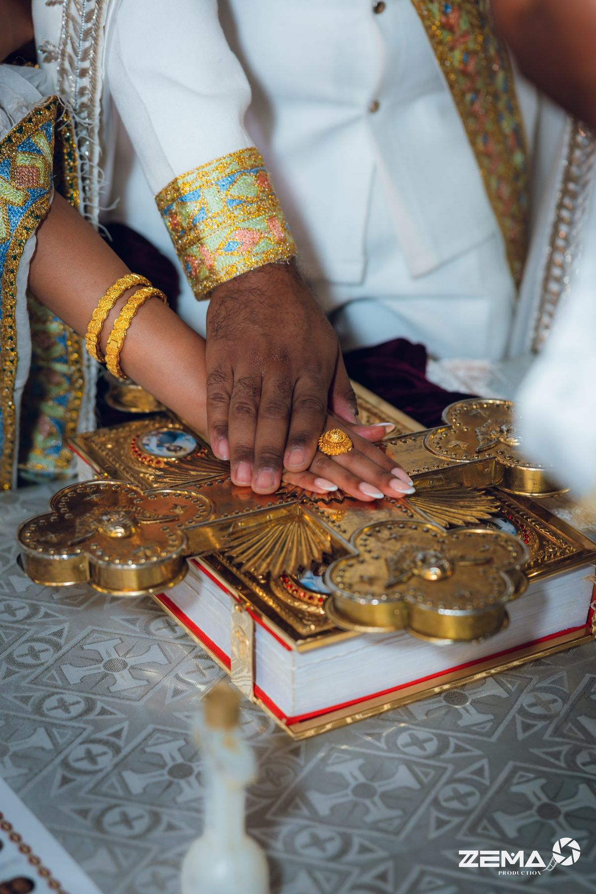
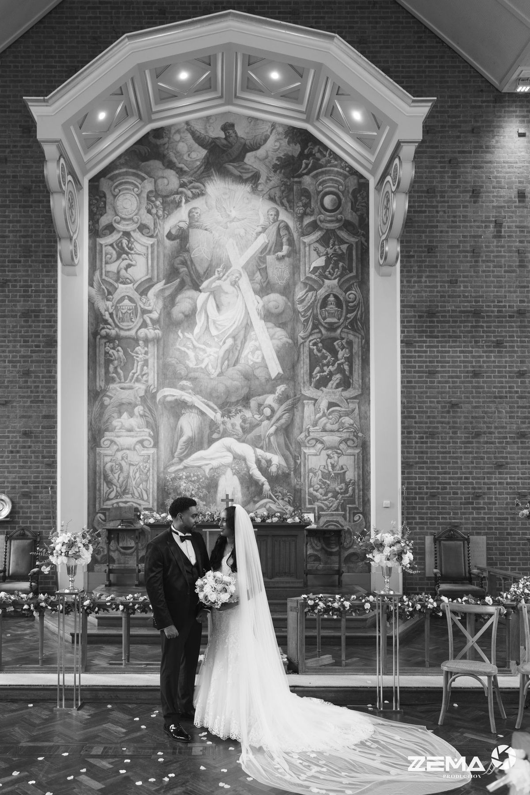
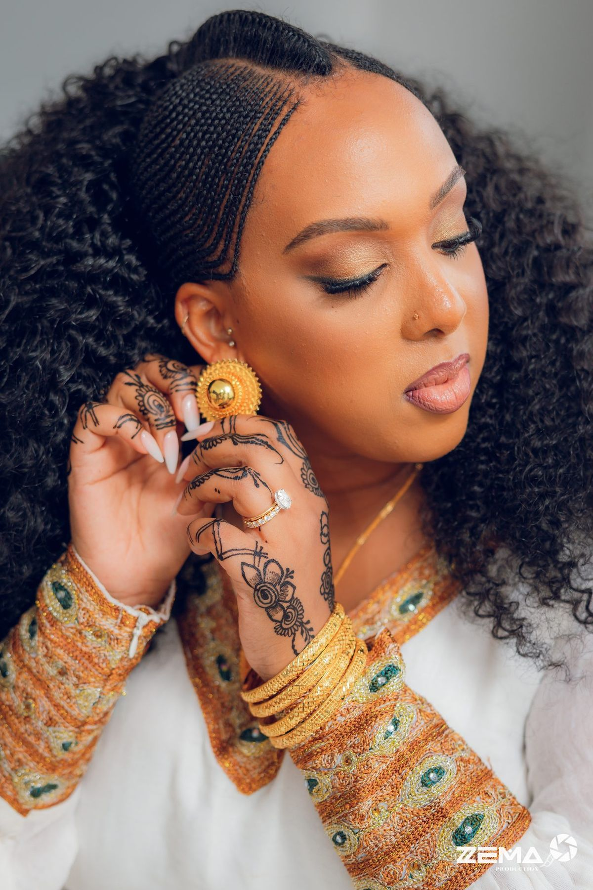

Founder · Photographer · Filmmaker
The story behind Zema
My story
My connection with art began long before I ever imagined building a production company.
Growing up, I was always drawn to creativity. I spent much of my childhood playing with old film cameras, fascinated by the way a camera could capture a moment and turn it into something worth keeping. That curiosity gradually developed into a deeper appreciation for photography and visual art.
During college, I discovered fine art photography, which became an important part of my creative journey. I was fortunate enough to receive the Best Art of the Year award within my Fine Art course, an experience that encouraged me to explore my creative perspective further.
I later went on to study Media and Film Production at the University of Greater Manchester, where I developed my understanding of filmmaking, storytelling and the art of creating moving images.
The Beginning of Zema
The idea behind Zema Production came from recognising something that was missing within the Ethiopian and Eritrean communities. I saw an opportunity to bring a different standard of wedding photography and filmmaking, combining thoughtful storytelling, modern creativity and a level of service that reflected the importance of these celebrations.
That vision became Zema Production.
From the beginning, I wanted to create something that felt timeless, cinematic and modern, without ever losing the culture, traditions and meaning behind the celebrations.
With over seven years of experience photographing and filming weddings and events, that original vision has continued to grow, shaping the way I approach every project and every couple I work with.
A Connection Beyond the Camera
Being able to connect with people is an important part of the way I work. I speak four languages: Amharic, Tigrinya, Arabic and English, which allows me to communicate naturally with people from different backgrounds and cultures.
Having a strong understanding of Ethiopian and Eritrean traditions, alongside experience working with diverse communities, helps me appreciate the cultural details, family connections and traditions that make every celebration unique.
For me, it’s not just about understanding the schedule or capturing the important moments. It’s about understanding the people, making them feel comfortable and creating an experience where everyone feels understood and valued.
Beyond Photography and Film
As Zema grew, so did my vision for what the experience could be. I began to realise that creating something special for couples shouldn’t start and end with the wedding day itself. The planning, communication and everything leading up to the celebration matter just as much.
That’s what inspired me to create Zema Planner, a personalised digital experience designed to bring everything together in one place. From wedding timelines and family photo lists to important details, payments and the final delivery of photographs and films, I wanted couples to feel organised, supported and connected throughout their journey with us.
It was another way to bring my creative and technical interests together, while making the experience of working with Zema more thoughtful and seamless.
For me, it’s about more than delivering photographs and films. It’s about taking care of the journey that comes with them.
What Zema Means to Me
Today, Zema is more than a photography and filmmaking company. It is a reflection of everything I’ve always loved about art, storytelling and bringing people together.
My approach has always been to look beyond the photographs and films themselves. It’s about understanding each couple, appreciating the details, recognising the moments that matter and creating something they can return to for years to come.
Every wedding has its own story. My goal is to tell it with creativity, intention and respect for the traditions that make it unique.
This is the vision behind Zema, and it continues to shape everything I create.

How I work
Story first
A filmmaker’s eye for the whole day: the build-up, the people, the quiet in-between and the celebration.
Calm on the day
Relaxed, organised and unobtrusive, with your plan in hand so you can stay with your guests.
Every tradition honoured
Church, Melse, Hammawiti and every custom that makes your wedding yours, planned and covered properly.
Photography
Cinematic film
One team, one story


Relaxed on the day, careful with every detail
Photography and film come from the same crew, so nothing is missed and nobody gets in each other’s way. Many of our weddings run over more than one day, and we plan every day with you in your private planner.
Your experience

Based in London, available worldwide
From London venues to destination weddings abroad, we travel with our crew wherever your story takes place.